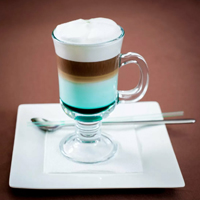
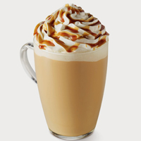
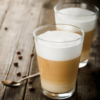

Кофе Латте
В Италии латте готовится в домашних условиях и подаётся на завтрак. Для изготовления латте используется мока и чашка подогретого молока. Чаще всего латте готовится из порции эспрессо, которая заливается как горячим, так и холодным вспененным молоком. Соотношение эспрессо, взбитого молока и молочной пены у такого напитка 1:(2 или 3):1, что позволяет получить наилучшие вкусовые, ароматические и эстетические свойства напитка.
Для придания дополнительных вкусовых ощущений, пенку латте часто посыпают добавками: корицей, шоколадом, или ореховой крошкой. Также применяют добавление сиропа амаретто: гурманы утверждают, что сочетание горьковатого вкуса кофе и ликера амаретто необычайно пикантно и не оставит кого-либо равнодушным.
  В ряде заведений латте подаётся в стеклянном бокале на салфетке. Стеклянный бокал прозрачен, и позволяет видеть слоистую структуру напитка, придавая этим кроме вкусового и эстетическое удовольствие. Часто латте украшают разнообразными рисунками из вспененного молока. Искусство создания рисунка на латте и капучино называется латте-арт.
Кофе латте схож по названию с напитком латте макиато. Основное отличие латте макиато заключается в том, что при его приготовлении кофе добавляется в молоко (а не молоко в кофе, как в латте) и напиток, таким образом, получается слоистым: слой молока, слой эспрессо, слой вспененного молока. Латте даёт более сильный вкус кофе, латте макиато — молока.
Порция латте подаётся в айриш-бокале (240—360 мл) и, соответственно, имеет больший объём, чем капучино, который подаётся в чашках (150—180 мл). При этом сохраняется одинаковое количество используемого эспрессо, а объём капучино меньше по сравнению с латте за счёт одной части молока (соотношение эспрессо, молока и молочной пены у него, в отличие от классического латте, одинаковое). Кроме сервировки и соотношения ингредиентов капучино от латте отличает более плотная пенка. Для пенки полагается ложечка. Основное отличие капучино и латте в том, что первое — кофе, а второе — кофейный напиток.